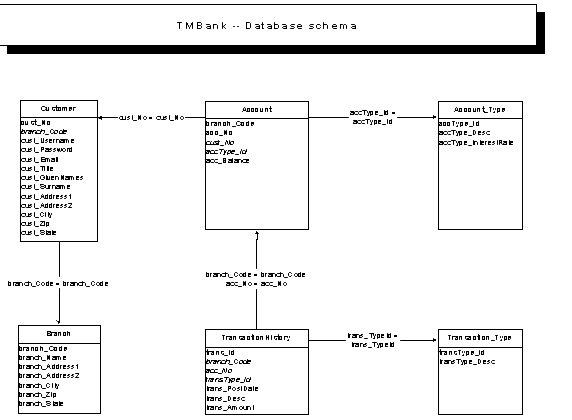
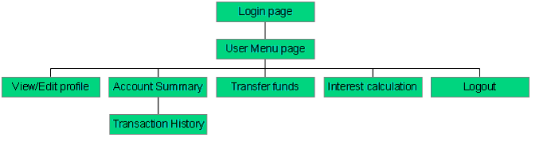
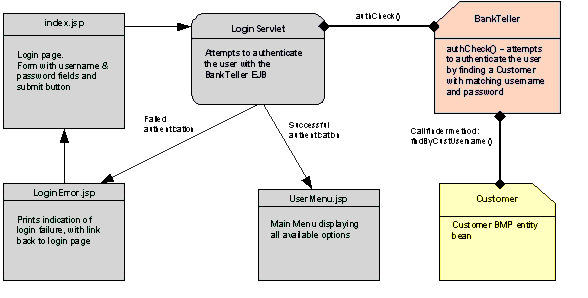
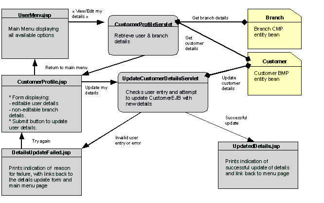
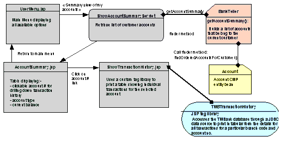
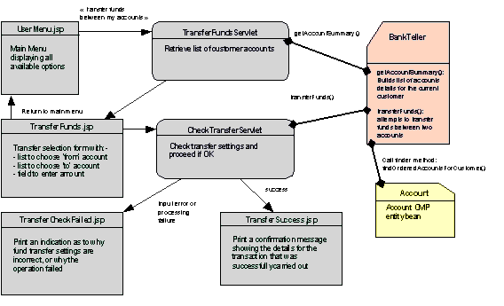
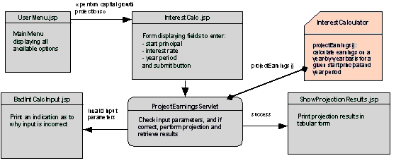

The iBank application is used as the migration sample. This application simulates a basic online banking service with the following functionality:
Log on to the online banking service
View/edit personal details and branch details
Summary view of accounts showing cleared balances
Facility to drill down by account to view individual transaction history
Money transfer service, allowing online transfer of funds between accounts
Compound interest earnings projection over a number of years for a given principal and annual yield rate
The application is designed after the MVC (Model-View-Controller) model where:
EJBs are used to define the business and data model components of the application
JavaServer Pages handle the presentation logic and represent the View.
Servlets play the role of Controllers and handle application logic, taking charge of calling the business logic components and accessing business data via EJBs (the Model), and dispatching processed data for display to JavaServer Pages (the View).
Standard J2EE methods are used for assembling and deploying the application components. This includes the definition of deployment descriptors and assembling the application components within the archive files:
A web application archive (WAR) file for the Web application including HTML pages, images, Servlets, JSP files and custom tag libraries, and ancillary server-side Java classes.
EJB-JAR archive files for the assembling of one or more EJBs, including deployment descriptor, bean class and interfaces, stub and skeleton classes, and other helper classes as required.
An enterprise application archive (EAR) archive file for the packaging of the enterprise application module that includes the Web application module and the EJB modules used by the application.
Use standard J2EE assembling methods to determine any differences between Sun ONE Application Server 6.x/7.x and Sun Java System Application Server 9.
The iBank database schema is derived from the following business rules:
The iBank company has local branches in major cities.
A Branch manages all customers within its regional area.
A Customer has one or more accounts held at their regional branch.
A customer Account is uniquely identified by the branch code and account number, and also holds the number of the customer to which it belongs. The current cleared balance available is also stored with the account.
Accounts are of a particular Account Type that is used to distinguish between several kinds of accounts (checking account, savings account, etc.).
Each Account Type stores a number of particulars that apply to all accounts of this type (regardless of branch or customer) such as interest rate and allowed overdraft limit.
Every time a customer receives or pays money into/from one of their accounts, the transaction is recorded in a global transaction log, the Transaction History.
The Transaction History stores details about individual transactions, such as the relevant branch code and account number, the date the transaction was posted (recorded), a code identifying the type of transaction and a complementary description of the particular transaction, and the amount for the transaction.
Transaction types allow different types of transactions to be distinguished, such as cash deposit, credit card payment, fund transfer between accounts, and so on.
The entity-relationship diagram shown below illustrates these business rules.
This graphic is currently unavailable.
Figure 9-1 Database Schema
This section lists the tables in the iBank database schema.
Table 9-1 BRANCH Table
Column Name | Datatype | Nullable/Default | Description |
|---|---|---|---|
BRANCH_CODE | CHAR(4) | NOT NULL | 4-digit code identifying the branch |
BRANCH_NAME | VARCHAR(40) | NOT NULL | Name of the branch |
BRANCH_ADDRESS1 | VARCHAR(60) | NOT NULL | Branch postal address, street address, 1st line |
BRANCH_ADDRESS2 | VARCHAR(60) | Branch postal address, street address, 2nd line | |
BRANCH_CITY | VARCHAR(30) | NOT NULL | Branch postal address, City |
BRANCH_ZIP | VARCHAR(10) | NOT NULL | Branch postal address, Zip code |
BRANCH_STATE | CHAR(2) | NOT NULL | Branch postal address, State abbreviation |
Table 9-2 CUSTOMER Table
Column Name | Datatype | Nullable/Default | Description |
|---|---|---|---|
CUST_NO | INT | NOT NULL | iBank customer number (global) |
BRANCH_CODE | CHAR(4) | NOT NULL | References this customer's branch |
CUST_USERNAME | VARCHAR(16) | NOT NULL | Customer's login username |
CUST_PASSWORD | VARCHAR(10) | NOT NULL | Customer's login password |
CUST_EMAIL | VARCHAR(40) | Customer's e-mail address | |
CUST_TITLE | VARCHAR(3) | NOT NULL | Customer's courtesy title |
CUST_GIVENNAMES | VARCHAR(40) | NOT NULL | Customer's given names |
CUST_SURNAME | VARCHAR(40) | NOT NULL | Customer's family name |
CUST_ADDRESS1 | VARCHAR(60) | NOT NULL | Customer postal address, street address, 1st line |
CUST_ADDRESS2 | VARCHAR(60) | Customer postal address, street address, 2nd line | |
CUST_CITY | VARCHAR(30) | NOT NULL | Customer postal address, City |
CUST_ZIP | VARCHAR(10) | NOT NULL | Customer postal address, Zip code |
CUST_STATE | CHAR(2) | NOT NULL | Customer postal address, State abbreviation |
Table 9-3 ACCOUNT_TYPE Table
Column Name | Datatype | Nullable/Default | Description |
|---|---|---|---|
ACCTYPE_ID | CHAR(3) | NOT NULL | 3-letter account type code |
ACCTYPE_DESC | VARCHAR(30) | NOT NULL | Account type description |
ACCTYPE_INTERESTRATE | DECIMAL(4,2) | DEFAULT 0.0 | Annual interest rate |
Table 9-4 ACCOUNT Table
Column Name | Datatype | Nullable/Default | Description |
|---|---|---|---|
ACCOUNT | |||
BRANCH_CODE | CHAR(4) | NOT NULL | branch code (primary-key part 1) |
ACC_NO | CHAR(8) | NOT NULL | account no. (primary-key part 2) |
CUST_NO | INT | NOT NULL | Customer to whom accounts belongs |
ACCTYPE_ID | CHAR(3) | NOT NULL | Account type, references ACCOUNT_TYPE |
ACC_BALANCE | DECIMAL(10,2) | DEFAULT 0.0 | Cleared balance available |
Table 9-5 TRANSACTION_TYPE Table
Column Name | Datatype | Nullable/Default | Description |
|---|---|---|---|
TRANSTYPE_ID | CHAR(4) | NOT NULL | A 4-letter transaction type code |
TRANSTYPE_DESC | VARCHAR(40) | NOT NULL | Human-readable description of code |
Table 9-6 TRANSACTION_HISTORY Table
Column Name | Datatype | Nullable/Default | Description |
|---|---|---|---|
TRANS_ID | LONGINT | NOT NULL | Global transaction serial no |
BRANCH_CODE | CHAR(4) | NOT NULL | key referencing ACCOUNT part 1 |
ACC_NO | CHAR(8) | NOT NULL | key referencing ACCOUNT part 2 |
TRANSTYPE_ID | CHAR(4) | NOT NULL | References TRANSACTION_TYPE |
TRANS_POSTDATE | TIMESTAMP | NOT NULL | Date & time transaction was posted |
TRANS_DESC | VARCHAR(40) | Additional details for the transaction | |
TRANS_AMOUNT | DECIMAL(10,2) | NOT NULL | Money amount for this transaction |
The TRANSACTION_HISTORY table is shown below.
Table 9-7 TRANSACTION_HISTORY Table
Column Name | Datatype | Nullable/Default | Description |
|---|---|---|---|
TRANS_ID | LONGINT | NOT NULL | Global transaction serial no |
BRANCH_CODE | CHAR(4) | NOT NULL | key referencing ACCOUNT part 1 |
ACC_NO | CHAR(8) | NOT NULL | key referencing ACCOUNT part 2 |
TRANSTYPE_ID | CHAR(4) | NOT NULL | References TRANSACTION_TYPE |
TRANS_POSTDATE | TIMESTAMP | NOT NULL | Date & time transaction was posted |
TRANS_DESC | VARCHAR(40) | Additional details for the transaction | |
TRANS_AMOUNT | DECIMAL(10,2) | NOT NULL | Money amount for this transaction |
The following figure provides a high-level view of iBank application navigation.
This graphic is currently unavailable.
Figure 9-2 iBank Application Navigation and Logic
The following figure shows the login process used in the iBank application.
This graphic is currently unavailable.
Figure 9-3 iBank Login Process
The following figure shows the view/edit details process used in the iBank application.
This graphic is currently unavailable.
Figure 9-4 View/Edit Details Process
The following figure shows how the account summary and transaction history work in the iBank application.
This graphic is currently unavailable.
Figure 9-5 Account Summary and Transaction History
The following figure shows how funds are transferred in the iBank application.
This graphic is currently unavailable.
Figure 9-6 Fund Transfer
The following figure shows how interest is calculated in the iBank application.
This graphic is currently unavailable.
Figure 9-7 Interest Calculation
Each table in the database schema is encapsulated as an entity bean:
Entity Bean | Database Table |
Account | ACCOUNT table |
AccountType | ACCOUNT_TYPE table |
Branch | BRANCH table |
Customer | CUSTOMER table |
Transaction | TRANSACTION_HISTORY table |
TransactionType | TRANSACTION_TYPE table |
All entity beans use container-managed persistence (CMP), except Customer, which uses bean-managed persistence (BMP).
Currently, the application only makes use of the Account, AccountType, Branch, and Customer beans.
Business components of the application are encapsulated by session beans.
The BankTeller bean is a stateful session bean that encapsulates all interaction between the customer and the system. BankTeller is notably in charge of the following activities:
Authenticating a customer through the authCheck() method
Giving the list of accounts for the customer through the getAccountSummary() method
Transferring funds between accounts on behalf of the customer through the transferFunds() method
The InterestCalculator bean is a stateless session bean that encapsulates financial calculations. It is responsible for providing the compound interest projection calculations, through the projectEarnings() method.
Component name | Purpose |
LoginServlet | Authenticates the user with the BankTeller session bean (authCheck() method), creates the HTTP session and saves information pertaining to the user in the session.Upon successful authentication, forwards request to the main menu page (UserMenu.jsp) |
CustomerProfileServlet | Retrieves customer and branch details from the Customer and Branch entity beans and forwards request to the view/edit details page (CustomerProfile.jsp). |
UpdateCustomerDetailsServlet | Attempts to effect customer details changes amended in CustomerProfile.jsp by updating the Customer entity bean after checking validity of changes. Redirects to UpdatedDetails.jsp if success, or to DetailsUpdateFailed.jsp in case of incorrect input. |
ShowAccountSummaryServlet | Retrieves the list of customer accounts from the BankTeller session bean (getAccountSummary() method) and forwards request to AccountSummary.jsp for display. |
TransferFundsServlet | Retrieves the list of customer accounts from the BankTeller session bean (getAccountSummary() method) and forwards request to TransferFunds.jsp allowing the user to set up the transfer operation. |
CheckTransferServlet | Checks the validity of source and destination accounts selected by the user for transfer and the amount entered. Calls the transferFunds() method of the BankTeller session bean to perform the transfer operation. Redirects the user to CheckTransferFailed.jsp in case of input error or processing error, or to TransferSuccess.jsp if the operation was successfully carried out. |
ProjectEarningsServlet | Retrieves the interest calculation parameters defined by the user in InterestCalc.jsp and calls the projectEarnings() method of the InterestCalculator stateless session bean to perform the calculation, and forwards results to the ShowProjectionResults.jsp page for display. In case of invalid input, redirects to BadIntCalcInput.jsp |
Component name | Purpose |
index.jsp | Index page to the application that also serves as the login page. |
LoginError.jsp | Login error page displayed in case of invalid user credentials supplied. Prints an indication as to why login was unsuccessful. |
Header.jsp | Page header that is dynamically included in every HTML page of the application |
CheckSession.jsp | This page is statically included in every page in the application and serves to verify whether the user is logged in (i.e. has a valid HTTP session). If no valid session is active, the user is redirected to the NotLoggedIn.jsp page. |
NotLoggedIn.jsp | Page that the user gets redirected to when they try to access an application page without having gone through the login process first. |
UserMenu.jsp | Main application menu page that the user gets redirected to after successfully logging in. This page provides links to all available actions. |
CustomerProfile.jsp | Page displaying editable customer details and static branch details. This page allows the customer to amend their correspondence address. |
UpdatedDetails.jsp | Page where the user gets redirected to after successfully updating their details. |
DetailsUpdateFailed.jsp | Page where the user gets redirected if an input error prevents their details to be updated. |
AccountSummaryPage.jsp | This page displays the list of accounts belonging to the customer in tabular form listing the account no, account type and current balance. Clicking on an account no. in the table causes the application to present a detailed transaction history for the selected account. |
ShowTransactionHistory.jsp | This page prints the detailed transaction history for a particular account no. The transaction history is printed using a custom tag library. |
TransferFunds.jsp | This page allows the user to set up a transfer from one account to another for a specific amount of money. |
TransferCheckFailed.jsp | When the user chooses incorrect settings for fund transfer, they get redirected to this page. |
TransferSuccess.jsp | When the fund transfer set-up by the user can successfully be carried out, this page will be displayed, showing a confirmation message. |
InterestCalc.jsp | This page allows the user to enter parameters for a compound interest calculation. |
BadIntCalcInput.jsp | If the parameters for compound interest calculation are incorrect, the user gets redirected to this page. |
ShowProjectionResults.jsp | When an interest calculation is successfully carried out, the user is redirected to this page that displays the projection results in tabular form. |
Logout.jsp | Exit page of the application. This page removes the stateful session bean associated with the user and invalidates the HTTP session. |
Error.jsp | In case of unexpected application error, the user will be redirected to this page that will print details about the exception that occurred. |
While many of application design choices made are certainly debatable especially in the "real-world" context, care was taken to ensure that these choices enable the sample application to encompass as many potential issues as possible as one would face in the process of migrating a typical J2EE application.
This section will go through the potential issues that you might face when migrating a J2EE application, and the corresponding component of iBank that was included to check for this issue during the migration process.
With respect to the selected migration areas to address, this section specifically looks at the following technologies:
The iBank application includes a number of servlets, that enable us to detect potential issues with:
The use of generic functionality of the Servlet API
Storage/retrieval of attributes in the HTTP session and HTTP request
Retrieval of servlet context initialization parameters
Page redirection
With respect to the JSP specification, the following aspects have been addressed:
Use of JSP declarations, scriptlets, expressions, and comments
Static includes (<%@ include file="..." %>): notably tested with the inclusion of the CheckSession.jsp file in every page)
Dynamic includes (<jsp:include page=... />): this is catered for by the dynamic inclusion of Header.jsp in every page
Use of custom tag libraries: a custom tag library is used in the file ShowTransactionHistory.jsp
Error pages for JSP exception handling: the Error.jsp page is the application error redirection page
The iBank application accesses a database via a connection pool and the data source, both programmatically (BMP entity bean, BankTeller session bean, custom tag library) and declaratively (with the CMP entity beans).
The iBank application uses a variety of Enterprise Java Beans.
Bean-managed persistence (Customer bean): allows us to test the following:
JNDI lookup of initial context
Pooled data source access via JDBC
Definition of a BMP custom finder (findByCustUsername())
Container-managed persistence (Account and Branch beans): allow us to test the following:
Object/Relational mapping with the development tool and within the deployment descriptor
Use of composite primary keys (Account)
Definition of custom CMP finders (with the Account bean, and its findOrderedAccountsForCustomer() method). This is the occasion to look at differences in declaring the query logic in the deployment descriptor, and also to have a complex example returning a collection of objects.
Stateless session beans: InterestCalculator allows us to test the following:
Using and deploying a stateless session bean
Calling a business method for calculations
Stateful session beans: BankTeller allows us to test the following:
Looking up various interfaces using JNDI and initial contexts
Using JDBC to perform database queries
Using various transactional attributes on bean methods
Using container-demarcated transactions
Maintaining conversational state between calls
Business methods acting as front-ends to entity beans (e.g., the "getAccountSummary()" method)
The iBank application is assembled by following the J2EE standard procedures. It contains the following components:
A Web application archive file for the Web application module, and EJB-JAR archives for the EJBs
An enterprise application archive file (EAR file) for the final packaging of the Web application and EJB modules